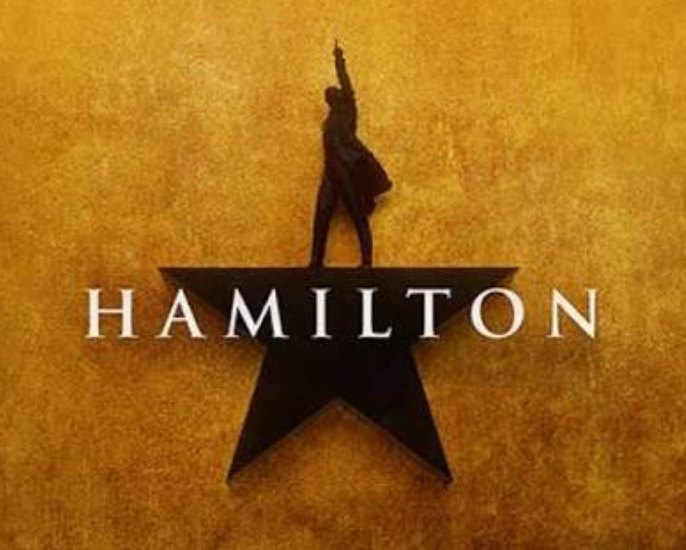

《汉密尔顿》（Hamilton: An American Musical）是 2015 年登陆百老汇的现象级原创音乐剧，由林-曼努尔·米兰达（Lin-Manuel Miranda）一人包揽词曲与剧本，改编自罗恩·彻诺（Ron Chernow）2004 年的传记《亚历山大·汉密尔顿》。全剧无对白，以嘻哈、R&B 与传统音乐剧交融的节奏，用多元族裔演员演绎美国开国元勋，把十八世纪的政治风云与今天的街头叙事缝在一起——"当年的美国，由今天的美国来讲述"。
| 中文名 | 汉密尔顿 |
|---|---|
| 英文名 | Hamilton: An American Musical |
| 类型 | 原创音乐剧（Hip-hop / R&B / Pop / 传统音乐剧）· 2 幕 |
| 作曲 / 作词 / 剧本 | Lin-Manuel Miranda |
| 原著 | Ron Chernow《Alexander Hamilton》（2004 传记） |
| 导演 | Thomas Kail |
| 编舞 | Andy Blankenbuehler |
| 音乐总监 / 编曲 | Alex Lacamoire |
| 外百老汇首演 | 2015-02-17 · The Public Theater（预演自 2015-01-20） |
| 百老汇首演 | 2015-08-06 · Richard Rodgers Theatre（26 场预演） |
| 百老汇驻演 | 2015-08-06 起驻演 Richard Rodgers Theatre，逾 3400 场 |
| 西区首演 | 2017-12-21 · Victoria Palace Theatre（伦敦） |
| 主要设计 | 布景 David Korins / 服装 Paul Tazewell / 灯光 Howell Binkley |
| 授权上演 | 学生 / 业余版由 Music Theatre International（MTI）全球发行 |
孤儿移民亚历山大·汉密尔顿（Alexander Hamilton）生于加勒比海小岛尼维斯，幼年失怙，凭一场飓风劫后余生中展露的才华与一笔捐助只身渡海，抵达纽约。他结识劳伦斯、拉斐特与穆里根，立下革命誓言；也在街头遇见聪慧的安吉丽卡、温柔的伊莱扎与佩吉三姐妹。从一文不名到华盛顿的副官、约克镇战役的英雄，再到美国首任财政部长——他的一生被"野心、遗产、历史由谁书写"紧紧缠绕。
第二幕里，汉密尔顿与杰斐逊、伯尔在内阁里展开嘻哈式 battle，推进国家银行与债务计划；丧子之痛、桃色丑闻与政治恩怨接踵而至。1804 年，他与政敌亚伦·伯尔（Aaron Burr）在新泽西威霍肯决斗，中弹身亡，年仅四十七岁。终曲把决斗、死亡与"谁来书写你的故事"缝在一起，由伊莱扎用余生守护他的名字。
| 角色 | 简介 | 百老汇首演 | 伦敦首演 |
|---|---|---|---|
| Alexander Hamilton | 孤儿移民，财政部长，全剧核心 | Lin-Manuel Miranda | Jamael Westman |
| Aaron Burr | Hamilton 的对手与旁观叙述者 | Leslie Odom Jr. | Jason Pennycooke |
| Eliza Schuyler Hamilton | Hamilton 之妻，终曲的守护者 | Phillipa Soo | Rachelle Ann Go |
| Angelica Schuyler | Eliza 之姐，聪慧而隐忍成全 | Renée Elise Goldsberry | Christine Allado |
| Marquis de Lafayette / Thomas Jefferson | 法裔将领 / 第三任总统，一人双面 | Daveed Diggs | Cleve September |
| George Washington | 总司令、首任总统 | Christopher Jackson | Obioma Ugoala |
| King George III | 英王，喜剧反派 | Jonathan Groff | Michael Jibson |
| Hercules Mulligan / James Madison | 理发匠间谍 / 第四任总统 | Okieriete Onaodowan | Tarinn Callender |
| Peggy Schuyler / Maria Reynolds | 小妹 / 丑闻当事人 | Jasmine Cephas Jones | Rachel John |
| 英文曲名 | 中文 | 情境 |
|---|---|---|
| "Alexander Hamilton" | 亚历山大·汉密尔顿 | Burr 第三人称开场，交代身世 |
| "My Shot" | 我这一枪 | 核心誓言，全剧第一声惊雷 |
| "The Schuyler Sisters" | 舒勒三姐妹 | 安吉丽卡/伊莱扎/佩吉登场 |
| "You'll Be Back" | 你会回来 | King George III 俏皮威胁 |
| "Right Hand Man" | 得力助手 | 任华盛顿副官 |
| "Helpless" | 无法自拔 | Eliza 一见钟情 |
| "Satisfied" | 心满意足 | Angelica 倒叙中的成全 |
| "Wait For It" | 等待 | Burr 的处世哲学 |
| "Guns and Ships" | 枪与船 | Lafayette 带来法国支援 |
| "Yorktown (The World Turned Upside Down)" | 约克镇（天地倒置） | 决战胜利 |
| "Dear Theodosia" | 致西奥多西娅 | Hamilton 与 Burr 对孩子的期许 |
| "Non-Stop" | 永不停歇 | 第一幕终，事业起飞 |
| 英文曲名 | 中文 | 情境 |
|---|---|---|
| "What'd I Miss" | 我错过了啥 | Jefferson 自法国归来 |
| "Cabinet Battle #1" | 内阁对决 #1 | 财政 vs 农业之战 |
| "The Room Where It Happens" | 发生之地 | Burr 觊觎权力核心 |
| "One Last Time" | 最后一次 | Washington 英雄式告别 |
| "Hurricane" | 飓风 | 回忆加勒比起点 |
| "The Reynolds Pamphlet" | 雷诺兹小册子 | 桃色丑闻曝光 |
| "Burn" | 焚 | Eliza 烧毁情书 |
| "It's Quiet Uptown" | 上城静默 | 丧子之痛 |
| "The Election of 1800" | 1800 大选 | 与 Jefferson/Burr 的角力 |
| "The World Was Wide Enough" | 世界足够宽广 | 决斗与临终 |
| "Who Lives, Who Dies, Who Tells Your Story" | 谁生谁死谁写你的故事 | 终曲，谁来书写遗产 |